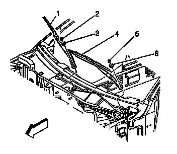
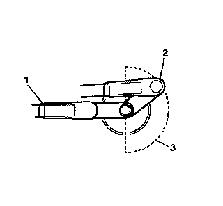
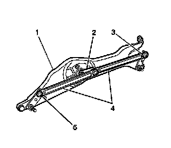

Wiper Gear Box: Service and Repair
Windshield Wiper Transmission Replacement
Tools Required
* J 39232 Wiper Linkage Separator
* J 39529 Wiper Linkage Installer
Removal Procedure

1. Remove the wiper arms (1,4). Refer to Windshield Wiper Arm Replacement (Windshield Wiper Arm Replacement) .
2. Remove the air inlet grille panel. Refer to Air Inlet Grille Panel Replacement (Service and Repair) .

3. Pull or push on the wiper transmission linkage to rotate the wiper motor crank arm (2) from the park position (1) to the area opposite the park position (3).

4. Disconnect the wiper motor harness connector (4).
5. Remove the 2 screws (3, 5) retaining the wiper system drive module.
6. Remove the wiper system drive module (1) from the vehicle.

7. Remove the drive links from the wiper motor crank arm and the wiper transmission drive shafts with the J 39232 .
8. Remove the transmission links from the module.
Installation Procedure

1. Position the transmission drive links (4) to the pivot arms (3, 5).

2. Install the drive links onto the wiper motor crank arm and the wiper transmission drive shafts with the J 39529 .
3. Install the wiper motor module assembly (1). Refer to Windshield Wiper System Module Replacement (Windshield Wiper System Module Replacement) .
4. Install the air inlet grille panel. Refer to Air Inlet Grille Panel Replacement (Service and Repair) .
5. Install the wiper arms (1, 4). Refer to Windshield Wiper Arm Replacement (Windshield Wiper Arm Replacement) .
6. Operate the wipers and check for proper operation.